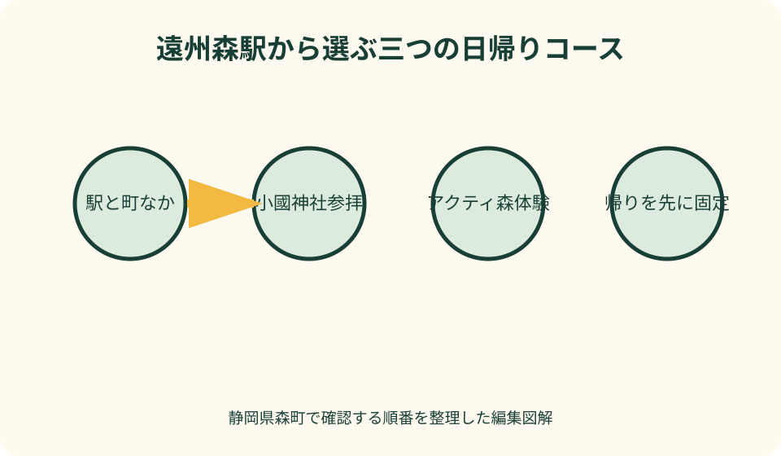
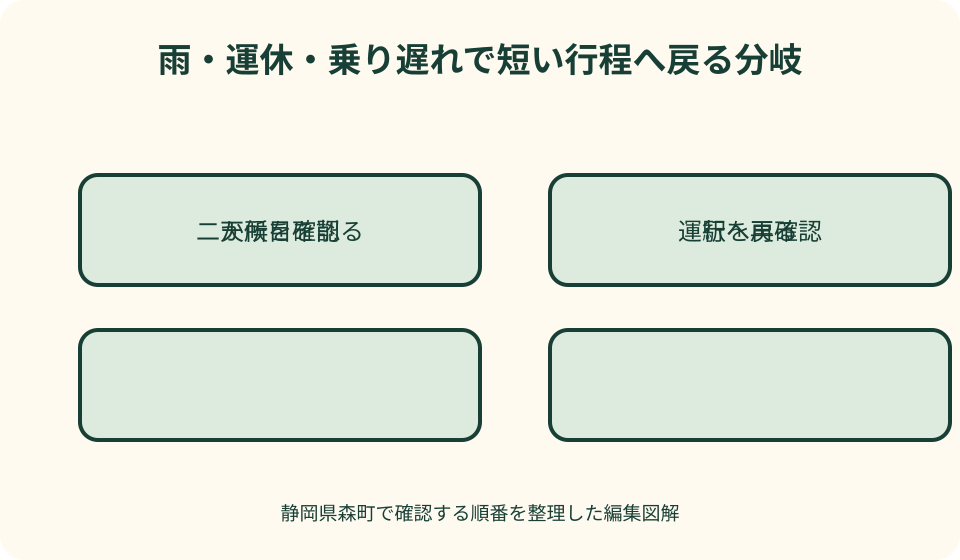

車なし観光・日帰り・行程｜最終確認 2026-08-10
静岡県森町を車なしで日帰り観光｜遠州森駅から選ぶ3つのモデルコース
車なしで森町を日帰りするなら、観光地の一覧から足すのではなく、帰りの列車へ戻れる一つの行程を選びます。最も組みやすいのは遠州森駅からの町歩きです。小國神社は秋葉バス、アクティ森は町営バス吉川線を追加するため、同じ日に両方を固定すると待ち時間と予約条件が重なります。主目的は一つ、余裕がある日だけ駅周辺でもう一か所という構成が安全です。

一日で1〜2か所に絞る理由
森町は駅前だけに観光地が集まる町ではありません。町公式の公共交通計画は町域が南北に長い地形を示し、天浜線、路線バス、町営バス、タクシーを異なる役割として整理しています。地図上の点を順番につないでも、その間に待ち時間があります。
一か所とは施設一軒ではなく、一つの地区または一つの目的です。遠州森駅周辺で町並みと昼食を楽しむ、小國神社で参拝と門前休憩をする、アクティ森で一つの体験をするという単位で数えます。
二か所目は、同じ交通軸で戻れる範囲にします。町なかコースで菓子店を追加する、小國神社参拝後にことまち横丁へ寄るなどです。別のバス路線へ乗り継ぐ目的地は、二か所目ではなく別日の主目的にします。
同行者の条件も目的数を決めます。長く歩けない人、乳幼児、大きな荷物がある人、初めて地方路線へ乗る人がいるなら、一か所を基本にします。参加者の中で最も速く歩ける人ではなく、最も多く休憩を必要とする人に合わせます。
荷物は両手のどちらかが空く量にします。駅や停留所にロッカーがあると決めつけず、背負える袋、雨具、飲料、補食へ絞ります。土産を買う日は帰路前にまとめ、乗換のたびに袋を数え直す負担を減らします。
訪問数を減らすと、公式情報の確認、食事、トイレ、雨宿り、写真、列車待ちに余裕が生まれます。余裕は空白ではありません。車がない日に自分で帰路を守るための時間です。
帰宅時刻から逆向きに行程を作る
最初に天浜線公式で遠州森駅から帰る列車を二本選びます。早い方を本命、後の方を予備にします。予備便でも自宅側の乗り換えが成立するかを確認し、最終列車だけを予備にしません。
小國神社またはアクティ森へ行く日は、目的地から遠州森駅へ戻るバスを本命列車より先に置きます。駅へ着いてすぐ列車へ飛び乗る接続ではなく、遅れ、精算、ホーム移動を吸収できる便を選びます。
目的地を出る時刻が決まったら、滞在終了、食事、到着、往路バス、往路列車を逆順に置きます。体験開始や授与所受付だけから予定を作ると、帰りの選択肢が残りません。
交通費も往復で見積もります。天浜線、バス、必要ならタクシーの概算を別々の公式へ確認し、現金や利用できる支払い手段を準備します。割引券を買うための移動や条件が複雑なら、通常の乗車方法を選ぶ方が行程を守りやすい場合があります。
紙または共有メモには、列車、バス、徒歩を色分けします。時刻の横に運行主体と確認日を書けば、天浜線、秋葉バス、町営バスのどの公式へ戻るか分かります。
コースA 遠州森駅と町なかを歩く
初めての車なし日帰りには、遠州森駅を出発点と帰着点にする町歩きが適します。駅公式で設備を確認し、町公式の観光地図から徒歩候補を探します。バス予約がなく、予定変更を駅周辺で完結しやすいからです。
午前は登録有形文化財の駅舎を乗降の邪魔にならない範囲で見て、町なかへ移ります。昼食、茶、和菓子、森山焼、町並みから主目的を一つ選びます。個店の営業は訪問日に公式情報または電話で確認します。
午後は、同じ地区の第二候補へ寄るか、駅へ早く戻ります。店が休みなら別地区へ移動せず、駅へ近い候補へ切り替えます。歩行範囲を広げるほど復路の不確実性が増えます。
遠州森駅公式の設備欄も出発前に見ます。トイレ、駅員、電話、バス・タクシーの掲載内容と、点字ブロックの表示を確認し、支援が必要なら天浜線へ相談します。駅に着けばすべて解決できると考えず、利用者に合う乗降方法を準備します。
駅へ戻った後は、ホーム、帰宅方向、乗車方法を確認します。列車待ちがあっても最後の買い物へ遠くまで戻りません。駅舎を見る、飲料を整える、同行者を休ませる時間にします。
コースB 小國神社の参拝を中心にする
小國神社の日は、遠州森駅で秋葉バス小國神社開運線へ接続します。秋葉バス公式の運行カレンダーで訪問日を選び、往復便、乗り場、運賃、支払いを確認します。過去の臨時便を現在の通常便として使いません。
神社へ着いたら、帰りのバス乗り場を先に確認します。参拝を第一目的とし、御朱印、紅葉散策、食事、ことまち横丁は残り時間から一つ選びます。列に並ぶ前に乗り場へ戻る時刻を見ます。
紅葉、初詣、祭事の日は、小國神社公式の最新交通案内も追加します。通常期の歩行時間、バス運行、乗り場、混雑をそのまま使いません。当年の日付が確認できない特別案内は予定へ入れません。
神社到着時に帰りの乗り場を写真で記録し、同行者の集合場所を決めます。境内ではぐれた場合、社殿前など人が集中する場所を探し回らず、帰りの交通へ戻りやすい確認済みの場所へ集まります。通信が混み合う場面にも備えます。
帰りのバスと天浜線が接続しない日は、事前予約したタクシーか訪問日変更を選びます。神社から駅まで歩いて解決する案を標準にせず、距離、道路、日没を考えます。

コースC アクティ森で一つ体験する
アクティ森の日は、森町営バス吉川線を使う行程を確認します。町公式時刻表で運行日、駅前停留所、アクティ森方面の停留所、予約印、予約期限、予約先を一便ずつ見ます。
体験は一つにします。陶芸、アウトドア、食事、買い物を全部予約せず、主目的の受付と終了をアクティ森公式で確認します。バス到着から受付まで、終了から停留所までの移動も必要です。
予約便を使う場合は、往路と復路を別々に予約確認します。施設の予約完了だけではバスが確保されたことになりません。変更や中止があれば施設とバス窓口の両方へ連絡します。
作品を持ち帰る体験では、完成品を当日運べるのか、後日受け取りや発送になるのかも施設へ確認します。大きな荷物を抱えて町営バスと天浜線へ乗る前提を置かず、梱包、送料、受取方法を予約時に聞きます。
屋外体験が雨や河川状況で変わる日は、駅を出る前に実施を確認します。中止ならアクティ森へ行ってから困るのではなく、町なかコースへ変更するか日を改めます。
二か所を組み合わせてよい条件
二か所にできるのは、第一目的の帰路を変えず、第二候補を省いても支障がない場合です。遠州森駅町歩きの中で店を一つ追加する、小國神社の門前で短く休むなど、同じ地区内に限ります。
小國神社からアクティ森へ移る組み合わせは、異なる交通確認と滞在時間が必要です。日帰りモデルでは同日固定にしません。タクシーで可能に見えても、配車、費用、帰りのバスまたは列車が変わります。
第一目的が早く終わった場合も、思いつきで遠い第二目的へ向かいません。復路列車までの時間から、往復移動、滞在、遅れ余裕を引き、すべて残る場合だけ追加します。
同行者の疲れ、天候、荷物が増えたら二か所目をやめます。予定表に最初から「省略可」と書き、行かなかったことを失敗にしません。
食事と休憩を交通の間に入れる
食事は空いた時間に取るのではなく、主目的の地区内へ置きます。遠州森駅周辺なら町なかの店、小國神社なら門前、アクティ森なら施設内外の公式案内から候補を選びます。食事のため別地区へ移動しません。
営業時間、定休日、売り切れ、待ち時間は変動します。第一候補だけでなく、軽食や持ち帰りの第二候補を持ちます。予約したバスへ間に合わない料理は注文しません。
休憩は同行者が疲れてから探すのではなく、駅到着、昼食、目的地、復路前に置きます。高齢者や子どもがいる日は、歩行距離より座れる時間を先に決めます。
食事制限やアレルギーがある人は、現地で対応店を探し始めません。持参できる補食を用意し、店舗へ原材料と調理環境を事前に確認します。希望の食事が難しくても、交通予定を崩さず安全に一日を続けられる準備を優先します。
飲料と少量の補食を携帯し、店が閉まっても帰路を守れるようにします。ごみは店や交通事業者の案内に従い、地域の私有地やバス停へ残しません。
雨天はコースを変えず目的数を減らす
雨の日は晴天の行程へ傘を足すだけでは足りません。駅から停留所、参道、体験施設まで屋外移動があります。歩行速度、濡れた荷物、乗降時間を見込み、早い帰路候補を使います。
町歩きは駅に近い食事または買い物一つにします。小國神社は参拝を中心にし、川沿い散策を省きます。アクティ森は屋外体験の実施を確認し、中止なら出発前に別コースへ変えます。
大雨や強風では、天浜線が動いてもバスや施設側の道路条件が変わる可能性があります。鉄道、森町、運行事業者、施設の順に最新情報を確認し、一部だけ動いている行程へ出発しません。
雨具で両手がふさがる人は、荷物を減らします。濡れた傘を車内で広げず、袋とタオルを用意します。衣服が濡れて体調が下がったら、二か所目を削り駅へ戻ります。
運休・乗り遅れ時は行程を短い方へ切り替える
往路列車に乗れなかったら、次列車で全予定を圧縮しません。小國神社やアクティ森の接続が崩れた場合、遠州森駅町歩きへ切り替えるか、訪問日を変えます。
遠州森駅でバスを逃した場合、次便の運行と予約条件を確認します。町営バスの次便が予約対象なら、その場で利用できるとは限りません。秋葉バスと町営バスの窓口を取り違えません。
目的地から帰る便が運休した場合、安全な施設内で運行者へ問い合わせます。タクシー、家族の迎え、次便を比較し、駅へ向かって歩き始めません。
復路列車の本命を逃しても、予備便があることを確認してから落ち着いて駅へ戻ります。予備便も難しい場合は鉄道会社へ相談し、別駅へ徒歩で移る判断を避けます。

タクシーは万能な予備ではなく予約できた時だけ使う
遠州森駅公式はタクシー乗り換えを掲載していますが、常時待機を意味しません。利用する可能性が高い日は、事前に日時、人数、荷物、目的地を伝えて配車可否を確認します。
小國神社やアクティ森の繁忙日は、通常より配車と移動に時間がかかる可能性があります。概算費用と迎車場所を確認し、予約できない場合は公共交通で成立する一目的へ戻します。
タクシーを雨天時だけ使う予定でも、当日の雨を見てから初めて連絡するのでは遅い場合があります。利用する条件を前日に決め、雨予報なら配車相談を済ませます。不要になった場合の取消方法と費用も事業者へ確認します。
片道だけタクシーにするときも、反対方向の帰路を確保します。行きが速くなったから二か所目を追加するのではなく、増えた余裕を滞在と休憩へ使います。
乗れなくなってから複数社へ無計画に連絡するより、第一連絡先と代案を事前に決めます。道路上で車を待たず、駅または施設が案内する安全な乗降場所を使います。
良い点
車なしなら運転者を決めず、全員が天浜線の車窓と町の風景を見られます。飲酒の有無にかかわらず、運転疲労を家族一人へ集中させません。
遠州森駅を軸に、徒歩、秋葉バス、町営バス、タクシーを目的に応じて選べます。町公式の観光案内と交通情報、事業者公式を重ねれば、一目的の日帰りを作れます。
訪問先を減らすことで、町並み、参拝、体験の一つを落ち着いて見られます。公共交通の待ち時間も、駅舎や地域の様子を知る時間になります。
注文したい点
車なし観光では、天浜線、秋葉バス、町営バス、施設の情報を別々に照合します。訪問日と目的地を選ぶと、予約要否、乗り場、復路候補まで公式情報でまとめる画面があると安心です。
観光地図は車の所要時間だけでなく、徒歩圏、定期バス、予約便、タクシー相談の区分を示す必要があります。駅から近いという表現だけで、歩けると誤解させない案内が望まれます。
運休や臨時変更は、町、鉄道、バス、施設から同じ最新情報へ進めると判断しやすくなります。終了済みの臨時便には実施年と終了表示を明確に付けてほしいところです。
代案・結論
初回は遠州森駅町歩き、小國神社の日は神社だけ、アクティ森の日は体験一つという三コースから選びます。主目的をまたぐ移動は別日にします。
帰りの目的地発便、遠州森駅からの復路列車二候補を先に決め、往路を逆算します。時刻は記事から写さず、訪問日の各公式で確認します。
雨天・運休・乗り遅れでは短いコースへ変えます。町なか一か所、早い列車、訪問日の変更を使い、遠い目的地への徒歩や最終便だけの行程を避けます。
共有メモには主目的、利用交通、予約、乗り場へ戻る時刻、復路二候補、タクシー連絡先、雨天案を書きます。二か所目には省略可と明記します。
大石の視点
私は車なし観光の案内で、行ける場所の数より、迷わず帰れる行程を重視します。移動手段が変わるたびに確認先も変わるため、一目的に絞ることが情報の精度を上げます。
遠州森駅の町歩き、小國神社の参拝、アクティ森の体験は、どれも一日を使う価値があります。全部を半分ずつ見るより、一つを丁寧に見て次の訪問理由を残す方が森町を理解できます。
予定を削る判断を最初から認めておけば、雨や遅れがあっても焦りません。帰り便を守り、地域交通を正しく使い、また来られることが車なし日帰りの成功です。
公式情報・確認先
掲載内容は次の一次情報を基礎に整理しました。営業、料金、催し、交通は変わるため、出発前または手続き前にリンク先で最新情報を確認してください。
- 観光案内・地図（静岡県森町、2026-08-10確認）
- 森町営バスのご案内（静岡県森町、2026-08-10確認）
- 森町地域公共交通法定計画（静岡県森町、2026-08-10確認）
- 遠州森駅 路線と駅情報（天竜浜名湖鉄道、2026-08-10確認）
- 小國神社開運線（秋葉バスサービス、2026-08-10確認）
- 森町体験の里 アクティ森（静岡県森町、2026-08-10確認）